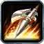
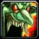
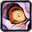
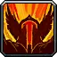

Classes › Warrior
 Warrior in WoW Forever
Warrior in WoW Forever
The WoW Forever Warrior trees at launch (Blizzard's Nov 2 notes): Spearing Strike, Bloodthrill and Weaponmaster in Arms, Reckless Swings, Improved Whirlwind and Bloodthirst in Fury, Master of Defense, Vanguard and Bastion in Protection. Values shown at max rank.
Warrior talent calculator Race picker
Starter builds
Arms leveling (two-hander)
Big two-hand hits, Deep Wounds bleeds and Mortal Strike at 40; Fury adds crit and rage.
Split 31 / 20 / 0 · level-by-level order →
EndgameFury dual-wield raid
Two one-handers, Death Wish into Bloodthirst, Flurry, Improved Whirlwind and Reckless Swings; Arms for Anger Management and Deep Wounds.
Split 14 / 37 / 0 · level-by-level order →
Best race for each Warrior spec
Top-scoring race from our racial scores: Horde first, Alliance below. Open the race picker for the full ranking and why.
| Spec | Leveling | Dungeons & raids | PvP |
|---|---|---|---|
| Arms / Fury DPS | Troll Night Elf | Orc Dwarf | Orc Gnome |
| Protection tank | Troll Dwarf | Tauren Dwarf | Tauren Gnome |
Warrior talents changed for launch
| Talent | Tree | Now |
|---|---|---|
| Arms | You keep up to 15 extra Rage (5 / 10 / 15) when you change stances. Now 3 ranks. | |
| Arms | Up to 6% more damage (2 / 4 / 6%) with two-handed melee weapons. | |
| Arms | Main-hand hits on targets with your Rend have up to a 20% chance (10 / 20%) to enable Overpower. Now 2 ranks. | |
| Arms | Slam's cast time and global cooldown are up to 0.5 sec shorter, it no longer interrupts or delays your melee swing, and its cooldown is up to 5 sec shorter (2.5 / 5 sec). Slam's base cooldown is now 15 sec. | |
 Improved Hamstring | Arms | Hamstring has up to a 15% chance to root the target for 5 sec. Since the Oct 28 hotfix the root shares one diminishing-returns group with Entrapment, Counterattack, Improved Wing Clip and Frostbite. |
| Fury | Shouts cover up to 50% more area and cost up to 25% less Rage, and Piercing Howl costs up to 25% less Rage too. | |
 Blood Craze | Fury | After you take a critical hit, or a single hit for over 20% of your max health, you regenerate up to 3% of your health over 6 sec. No longer causes threat and no longer triggers while sitting. |
 Enrage | Fury | When you are hit, a 30% chance to deal up to 10% more Physical damage for 12 sec. Moved up to row 3. |
| Fury | Costs 25% of your base health: your next 4 melee attacks within 8 sec generate 5 extra Rage each. 15 sec cooldown. | |
| Fury | After Enrage, Berserker Rage, Bloodrage, Death Wish, Bloodthirst or Reckless Swings, your next 3 melee attacks each restore up to 1% of your max health; the healing no longer causes threat. Moved up to row 5 and now follows Blood Craze instead of Enrage. | |
| Fury | After a melee crit your next 3 swings are up to 30% faster (10 / 20 / 30%). Now 3 ranks and no longer needs Death Wish. | |
| Fury | Whirlwind's cooldown is up to 2 sec shorter, and it deals up to 30% more damage (15 / 30%) to the closest enemy. | |
| Fury | Instant attack for 45% of your Attack Power plus 30, and 10% faster movement for 10 sec. 30 Rage, 6 sec cooldown. Now requires Death Wish. | |
 Defiance | Protection | Up to 20% more threat (7 / 13 / 20%) in Defensive Stance with a shield equipped. Defensive Stance itself now adds 80% threat (was 30%). |